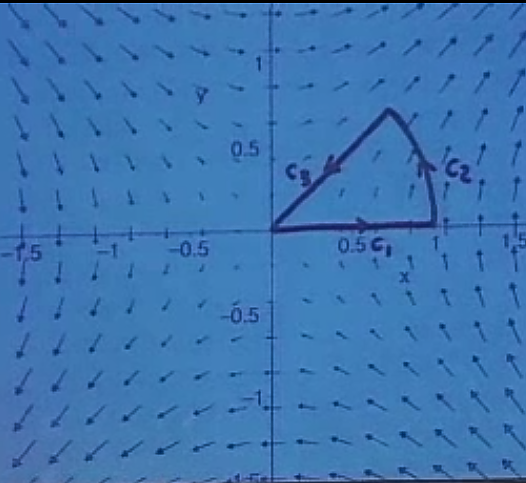
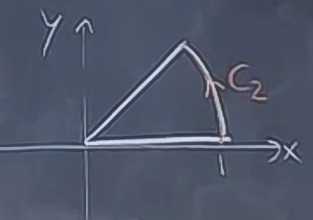
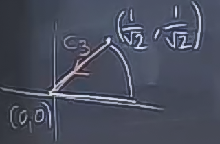
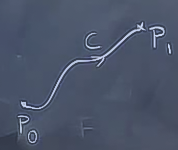
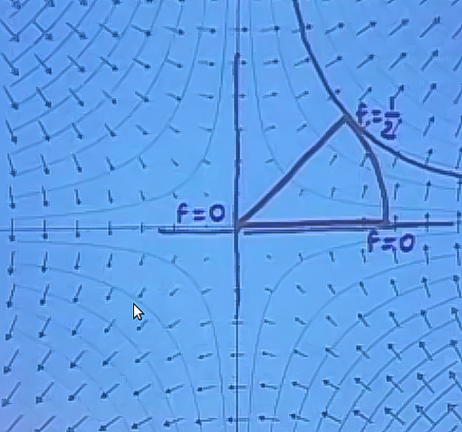

Ders 20
Çizgi entegrallerini iş hesabında görmüştük. $\vec{F}$ tarafından $C$ eğrisi üzerinde yapılan iş
$$ \int_C \vec{F} \cdot \mathrm{d}\vec{r} = \int_C \vec{F} \cdot \vec{T} \mathrm{d} s $$
idi. Eşitliğin sağı birim teğet vektörü kullanarak aynı hesabı gösteriyor, $ds$ ise eğri uzunluğu $s$'ten ortaya çıkıyor. Diğer bir form
$$ = \int_C M \mathrm{d} x + N \mathrm{d} y $$
ki $\vec{F} = < M,N >$ olmak uzere.
Örnek
Şöyle bir vektör alanı veriyorum
$$ \vec{F} = < y,x > $$
Bu alanın neye benzediği çok bariz değil, ama bu alanın bir bilgisayar çizimi altta

Diyelim ki bu vektör alanında orijinden başlayarak $c_1,c_2,c_3$ vektörlerini takip ederek hareket ettiğimde yapılan işi hesaplamak istiyorum. $c_1$ düz, $c_2$ birim çember üzerinde bir parça, $0 \le \theta \le \pi / 4$ olmak üzere, ve $c_3$ tekrar düz. Yani
$$ c = c_1 + c_2 + c_3 $$
O zaman iş hesap entegralinin üç parçası olacak. Her parça $i$ için
$$ \int_{C_i} y \mathrm{d} x + x \mathrm{d} y $$
gerekiyor.
1) Yatay x ekseninde, $(0,0)$'dan $(1,0)$'a.
$$ y = 0, \mathrm{d} y = 0 $$
$$ \int_{c_1} y \mathrm{d} x + x \mathrm{d} y = 0 \mathrm{d} x + 0 = 0$$
Çizgi entegrali çok basit yani. Bu sıfır sonucunu başka şekilde de görebilirdik, vektör alanına bakarsak x eksenine her zaman dik olduğunu görürürüz. O zaman $\vec{F}\cdot \vec{T}$ hep sıfır sonucunu verecektir.
2) $c_2$ bölümü.
$x,y$'yi tek değişken bağlamında nasıl temsil edeceğimizi bulmamız gerekiyor. Eğer bir çember üzerinde hareket ediyorsak, bu tek değişken açı olabilir.
$$ x = \cos\theta $$
$$ y = \sin\theta $$
$$ 0 \le \theta \le \pi / 4 $$

Türevleri alırsak
$$ dx = -\sin\theta \mathrm{d}\theta$$
$$ dy = \cos\theta \mathrm{d}\theta $$
Entegral
$$ \int_{c_2} y \mathrm{d} x + x \mathrm{d} y = \int_0^{\pi/4} \sin\theta (-\sin\theta \mathrm{d}\theta) + \cos\theta \cos\theta d\theta $$
$$ = \int_0^{\pi/4} \cos^2\theta - \sin^2\theta \mathrm{d}\theta $$
$$ = \int_0^{\pi/4} \cos(2\theta) \mathrm{d}\theta $$
$$ = \frac{1}{2}\sin 2\theta \bigg|_0^{\pi/4} $$
$$ = \frac{1}{2} $$
3) $c_3$ bölümü
$$ \int_{c_2} y \mathrm{d} x + x \mathrm{d} y $$  Başladığımız noktayı biliyoruz, geriye doğru orijine geleceğiz. Bu çizgiyi parametrize etmek zor değil.
$$ x = \frac{1}{\sqrt{2}} - \frac{1}{\sqrt{2}} t $$
$$ y = \frac{1}{\sqrt{2}} - \frac{1}{\sqrt{2}} t $$
$$ 0 \le t \le 1 $$
Ama üstteki doğru olsa da, gereğinden fazla çetrefil oldu.
Daha kolay bir yöntem "orijinden" ileri doğru bir yön düşünmek, ve sonra "bunun tersi olsun" diyerek istediğimiz gidişatı elde etmek. Yani
$$ x = t $$
$$ y = t $$
ki $t$, 0 ile $1/\sqrt{2}$ arasında. Bu bize $(-c_3)$'u verecek, yani $c_3$'un tersini. O zaman entegrali şu şekilde görebiliriz
$$ \int_{-c_3} = - \int_{c_3} $$
Buradaki numara 0'dan başlamanın cebirsel temsili kolaylaştırmış olması. Devam edelim
$$ \mathrm{d} x = \mathrm{d} t $$
$$ \mathrm{d} y = \mathrm{d} t $$
$$ \int_{-c_3} y \mathrm{d} x + x \mathrm{d} y = \int_{0}^{\frac{1}{\sqrt{2}}} t \mathrm{d} t + t \mathrm{d} t = \int_{0}^{\frac{1}{\sqrt{2}}} 2t \mathrm{d} t = t^2 \bigg|_{0}^{\frac{1}{\sqrt{2}}} = \frac{1}{2} $$
Üsttekinin tersine ihtiyacımız olduğuna göre
$$ \int_{c_3} y \mathrm{d} x + x \mathrm{d} y = -\frac{1}{2} $$
Ya da iki üstteki entegralin sınırlarını tam ters yönde de alabilirdik, 0'dan $1/\sqrt{2}$'a gitmek yerine, $1/\sqrt{2}$'dan 0'a gidebilirdik, o da aynı sonucu verirdi.
Nihayet, yapılan tüm iş, tüm entegrallerin toplamı olacağına göre
$$ \int_C = \int_{c_1} + \int_{c_2} + \int_{c_3} $$
$$ = 0 + \frac{1}{2} - \frac{1}{2} = 0$$
Peki çizgisel entegralleri hesaplamaktan kurtulabilir miyiz?
Şimdi, gördüğümüzde vurgulamamış olsak, diyelim ki vektör alanı $\vec{F}$ bir fonksiyonun gradyanı, yani
$$ \vec{F} = \nabla f$$
Bir gradyan alanımız var yani, ve bu durumda $f(x,y)$'ye bir potansiyel alanı (potential field) diyebiliriz. Bu isim fizikle alakalı doğal olarak, $f$ fonksiyonu $x,y$ noktasında ne kadar enerji, potansiyel, vs. depolandığını gösterir genellikle, ve bu noktadaki gradyan kuvveti verir. Daha doğrusu gradyanın negatifi, fizikçiler gradyanı eksi ile çarparlar, yani matematikçiler ile aralarında böyle bir fark vardır. Aklımızda tutalım. Biz eksi olmayan yöntemi kullanacağız.
Çizgizel Entegraller İçin Calculus'un Temel Teorisi
$$ \int_{C} \nabla f \cdot \mathrm{d}\vec{r} = f(P_1) - f(P_0) $$

Bu çok faydalı bir formül, ama sadece vektör alanı bir gradyan ise, ve $f$'i biliyorsak ise yarar. İleriki bir derste bir vektör alanının bir gradyan olup olmadığını nasıl anlayacağımızı göreceğiz, ve eğer bir gradyan ise, potansiyel fonksiyonunu geri elde etmenin tekniklerini göreceğiz.
$$ \int_C f_x \mathrm{d} x + f_y \mathrm{d} y = \int_C \mathrm{d} f = f(P_1) - f(P_0) $$
Üstteki en sağdaki eşitliğe bakınca $f$ noktaları arasındaki fark formülünü nasıl elde ettiğimiz aslında pek şaşırtıcı değil. Bu formda elde ettiğimiz sonuç tek değişkenli Calculus'taki sonuç ile aynı.
İspat
Diyelim ki size bir eğri verdim ve alttaki entegrali hesaplamanızı istedim.
$$ \int_{C} \nabla f \cdot \mathrm{d}\vec{r} = \int_C f_x \mathrm{d} x + f_y \mathrm{d} y $$
Bunu nasıl yaparız? Bir parametre seçeriz ve her şeyi o parametre bağlamında temsil ederiz.
$$ C: x = x(t), y = y(t) $$
O zaman
$$ dx = x'(t)dt, dy = y'(t)dt $$
$$
\int_{C} \nabla f \cdot \mathrm{d}\vec{r} =
\int_C \bigg( f_x \frac{\mathrm{d} x}{\mathrm{d} t} + f_y \frac{\mathrm{d} y}{\mathrm{d} t} \bigg) \mathrm{d} t
$$
Parantez içindeki ifadeler tanıdık geliyor mu? Böyle bir sonucu Zincirleme Kanunu sonucunda da görmüştük.
$$ = \int_C \frac{\mathrm{d} f}{\mathrm{d} t} \mathrm{d} t $$
Diyelim ki $t_0 \le t \le t_1$
$$ = \int_{t_0}^{t_1} \frac{\mathrm{d} f}{\mathrm{d} t} \mathrm{d} t$$
Ve bildik Calculus'un Temel Teorisine göre üstteki $f$'in iki değer arasındaki farkına eşittir.
$$ = f\bigg( x(t), y(t) \bigg) \bigg|_{t_0}^{t_1} = f(P_1) - f(P_0) $$
İspat tamamlandı.
Örnek
Baştaki örneğe dönersek, orada görülen vektör alanı aslında raslantısal bir şekilde bir gradyan alanı da olabilir mi acaba? Vektör alanı şöyleydi
$$ \vec{F} =
Acaba aklımıza $x$'e göre türevi alınınca $y$, $y$'ye göre türevi alınınca $x$ olan bir fonksiyon geliyor mu? Evet, mesela $xy$ fonksiyonu böyle bir fonksiyon. Yani
$$ f(x,y) = xy $$
O zaman bu alanda bir çizgi entegralini hesaplamak için $f$'in başlangıç, bitiş noktaları arasındaki farkı almak yeterli.

Üstteki resmi nasıl okuruz? $c_1$ boyunca potansiyel hiç değişmedi, yapılan iş sıfır. Sonra $c_2$ boyunca hareket ve $1/2$'ye geldik, yapılan iş $1/2$, gibi.
Bu güzel bir numara ve oldukça kullanışlı, çünkü çoğu vektör alanı bir gradyan alanı olarak görülebiliyor, mesela fizikte potansiyelin gradyanı. Ama unutmayalım, her vektör alanı gradyan değildir, gradyan olmayan pek çok vektör alanı vardır. Mesela manyetik alanlar gradyan değildir.
Bu uyarıdan sonra, eğer $\vec{F}$ bir gradyan alanı ise, Temel Teorinin diğer etkilerini de görelim.
Sonuç 1: Yol Bağımsızlığı (path independence) Özelliği
Çizgi entegralini hesaplarken hangi yoldan geçtiğiniz önemli değil, eğer başlangıç ve bitiş noktaları aynı ise. Bu özellik diğer vektör alanları için doğru olmayabilir, ama gradyan alanları için işler.
Resimde durum için bu
$$ \int_{c_1}\nabla f \cdot \mathrm{d}\vec{r} = \int_{c_2}\nabla f \cdot \mathrm{d}\vec{r} $$
Bu teorinin ispatı aslında kolay, Temel Teorinin yan etkilerinden biri sadece. Başlangıç ve bitiş aynı ise, onların farkı hangi yoldan gidilirse gidilsin aynı olacaktır.
Bu ne ise yarar? $f$'i bilmiyorsak bile eğer vektör alanının gradyan alanı olduğunu biliyorsak, çizgi entegralleri birbirine eşittir diyebiliriz hemen.
Sonuç 2: $\vec{F} = \nabla f$ Muhafazakardır (conservative)
Fizik bağlamında muhafazakarlık enerjinin muhafaza edilmesinden ileri gelir, bu kavrama göre enerjiyi kuvvet alanımızda bedavaya elde edemeyiz. Eğer alttaki gibi "kapalı" bir gidişat hayal edersek
ki $C$ bir kapalı eğri, o zaman $C$ üzerinde yapılan iş
$$ \int_{C}\nabla f \cdot \mathrm{d}\vec{r} = 0$$
sıfıra eşittir. Muhafazakarlığın tanımı budur.
Fiziksel, uygulamasal olarak bunun sonucu şudur: Muhafazakar bir alanda kapalı devre, sürekli kendi kendine hareket eden bir gidişat olamaz. Çünkü başlangıç ve bitiş arasında yapılan iş, hangi yol takip edilirse edilsin, sıfıra eşittir. Hiç iş yapılmamaktadır.
Manyetik alanlar böyle değildir, bu sebeple bu alanlardaki hareketle o alandan enerji çekip çıkarabiliriz. Ama eletrik ve yerçekimsel alanlarda bu işlemez.
Her vektör alanının gradyan alanı olmadığını iyice vurgulamak için su örneğe bakalım.
$$ \vec{F} = <-y,x> $$
Bu alan bir çember etrafında dönen bir alandı. Birim çemberi (unit circle) düşünürsek $\vec{F} // \vec{T}$ idi, o zaman $\vec{F}\cdot\vec{T} = |\vec{F}|$. Demek ki
$$ \int_C \vec{F}\cdot\vec{T} \mathrm{d} s = \int_C 1 \mathrm{d} s = 2\pi $$
çünkü birim çember etrafında $|\vec{F}|$ uzunluğu birim çemberin uzunluğudur. Ve bariz bir şekilde $2\pi \ne 0$, yani bu alan muhafazakar bir alan değil. Buradan anlıyoruz ki bu alan hiçbir şeyin gradyanı da değil, olsaydı entegral sıfır olurdu.
Ek olarak yol bağımsızlık özelliği de geçerli değil, üstteki resimde çemberin sadece üst parçasında hareket edersek $\pi$, alt parçasında hareket edersek $-\pi$ elde ederiz, bu sonuçlar birbirine eşit değil.
Biraz fizik yapalım şimdi.
Eğer bir kuvvet alanı $\vec{F}$ bir potansiyelin gradyani ise
$$ \vec{F} = \nabla f $$
[hoca üstte eksi işareti kullanmadığı için burada espri yaparak "konumuz -Fizik" diyor]
$\vec{F}$'in yaptığı iş = potansiyelin iki nokta arasındaki farkı.
Mesela yerçekimsel alan, elektriksel alan ve yerçekimsel potansiyel, elektriksel potansiyel.
Bu arada elektriksel potansiyele "voltaj" ismi de veriliyor, parmağınızı prize sokunca canınızı acıtan şey yani.
[gerisi atlandı, aynı şeylerden bahsediliyor]